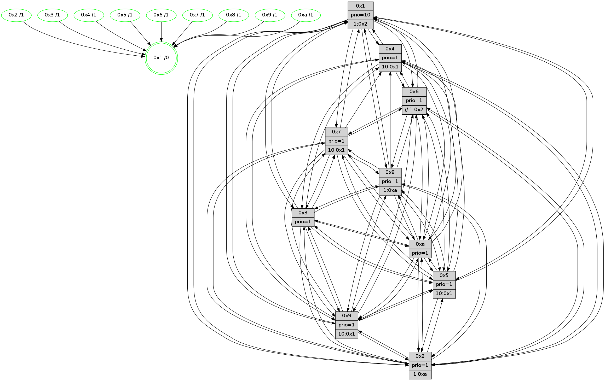

>> << IDX [start] -100 -25 -5 +0 +5 +25 +100 [1340.25124407]
 Previous packets
----------------------------------------------------------------------
1335.522458 beacon01(faad) #0 coord=01,02,03,04,05,06,07,0a,09,08 cycle=688.0ms assoc
-- color-indic=1 64 5b 36
1335.532440 beacon02(faad) #0 coord=01,02,03,04,05,06,07,0a,09,08 cycle=688.0ms assoc 64 c8 07
1335.542443 beacon03(faad) #0 coord=01,02,03,04,05,06,07,0a,09,08 cycle=688.0ms assoc 64 b2 4a
1335.552441 beacon04(faad) #0 coord=01,02,03,04,05,06,07,0a,09,08 cycle=688.0ms assoc 64 c5 a0
1335.562441 beacon05(faad) #0 coord=01,02,03,04,05,06,07,0a,09,08 cycle=688.0ms assoc 64 bf ed
1335.572442 beacon06(faad) #0 coord=01,02,03,04,05,06,07,0a,09,08 cycle=688.0ms assoc 64 31 3a
1335.582442 beacon07(faad) #0 coord=01,02,03,04,05,06,07,0a,09,08 cycle=688.0ms assoc 64 4b 77
1335.592446 beacon0a(faad) #0 coord=01,02,03,04,05,06,07,0a,09,08 cycle=688.0ms assoc 64 3a 7c
1335.612447 beacon08(faad) #0 coord=01,02,03,04,05,06,07,0a,09,08 cycle=688.0ms assoc 64 ce e6
1335.624308 [Hello(5): seq=852 sym=7,6,4,3,1,9,8,10,2 sysInfo=hasWarning stat=7:5,3,8,0/6:8,12,6,4/4:8,10,14,14/3:0,5,3,1/1:4,7,6,0/9:4,3,11,10/8:6,4,12,3/10:7,5,11,8/2:12,0,4,7]
1335.626707 [Hello(1): seq=761 sym=4,2,9,5,10,3,8,6,7 sysInfo=coloring-mode-on,ColoringModeRequestCalled stat=4:15,2,0,2/2:9,8,9,5/9:10,4,15,1/5:3,3,14,8/10:4,0,13,7/3:8,2,10,10/8:12,11,11,1/6:13,14,9,0/7:10,13,3,1]
1335.629441 [Color(10) seq=441 @0:0 prio=1]
1335.631872 [Color(9) seq=411 @0:0 prio=1 >10.@1,1.@5,1.@a]
1335.633812 [Hello(6): seq=852 sym=2,5,4,7,9,8,10,1 sysInfo=hasWarning stat=2:2,4,0,0/5:13,2,15,3/4:0,14,3,7/7:15,11,12,15/9:11,15,10,10/8:13,2,5,5/10:11,6,0,12/1:9,0,9,1]
1335.636869 [Hello(3): seq=852 sym=1,7,6,2,4,8,9,10,5 sysInfo=hasWarning stat=1:13,5,12,0/7:11,10,2,14/6:11,4,4,0/2:5,11,13,2/4:5,4,5,12/8:3,9,12,4/9:6,11,6,0/10:1,6,8,4/5:7,14,5,0]
1335.640314 [Color(3) seq=481 @0:0 prio=1]
1335.646362 [Color(6) seq=484 @0:0 prio=1 >>1.@2,1.@3,1.@4]
1335.648051 [Hello(2): seq=848 sym=4,5,7,6,3,9,8,10,1 sysInfo=hasWarning stat=4:4,12,15,12/5:3,7,8,2/7:1,9,15,1/6:1,4,1,0/3:1,13,7,12/9:14,12,4,9/8:12,11,10,11/10:4,6,14,10/1:12,0,6,0]
1335.652155 [Color(2) seq=428 @0:0 prio=1 >1.@a]
----------------------------------------------------------------------
1336.310590 beacon01(faad) #0 coord=01,02,03,04,05,06,07,0a,09,08 cycle=688.0ms assoc
-- color-indic=1 64 e7 33
1336.320572 beacon02(faad) #0 coord=01,02,03,04,05,06,07,0a,09,08 cycle=688.0ms assoc 64 74 02
1336.330573 beacon03(faad) #0 coord=01,02,03,04,05,06,07,0a,09,08 cycle=688.0ms assoc 64 0e 4f
1336.340573 beacon04(faad) #0 coord=01,02,03,04,05,06,07,0a,09,08 cycle=688.0ms assoc 64 79 a5
1336.350572 beacon05(faad) #0 coord=01,02,03,04,05,06,07,0a,09,08 cycle=688.0ms assoc 64 03 e8
1336.360573 beacon06(faad) #0 coord=01,02,03,04,05,06,07,0a,09,08 cycle=688.0ms assoc 64 8d 3f
1336.370574 beacon07(faad) #0 coord=01,02,03,04,05,06,07,0a,09,08 cycle=688.0ms assoc 64 f7 72
1336.380579 beacon0a(faad) #0 coord=01,02,03,04,05,06,07,0a,09,08 cycle=688.0ms assoc 64 86 79
1336.400580 beacon08(faad) #0 coord=01,02,03,04,05,06,07,0a,09,08 cycle=688.0ms assoc 64 72 e3
1336.411778 [Hello(10): seq=785 sym=6,2,3,8,7,5,9,4,1 sysInfo=hasWarning stat=6:4,10,11,3/2:4,6,0,0/3:9,2,0,14/8:1,0,10,2/7:5,4,7,9/5:11,10,9,0/9:1,3,1,0/4:14,0,5,1/1:2,6,5,1]
1336.415865 [Hello(7): seq=852 sym=2,3,5,6,4,8,9,10,1 sysInfo=hasWarning stat=2:4,2,14,3/3:14,9,0,3/5:10,15,6,2/6:5,2,13,11/4:5,11,2,0/8:15,2,7,0/9:5,2,5,1/10:5,11,10,6/1:5,1,8,0]
1336.418370 [Color(5) seq=415 @0:0 prio=1 >10.@1,1.@6,1.@7,1.@8]
1336.420097 [Color(7) seq=380 @0:0 prio=1 >10.@1,1.@5,1.@6,1.@8]
1336.422592 [Hello(9): seq=796 sym=2,5,3,4,7,6,8,10,1 sysInfo=hasWarning stat=2:7,4,10,10/5:12,13,12,7/3:8,8,3,3/4:5,12,14,1/7:6,3,1,4/6:6,10,9,13/8:6,2,14,4/10:3,3,1,4/1:7,12,12,1]
1336.425687 [Hello(8): seq=796 sym=5,2,3,7,9,6,4,10,1 sysInfo=hasWarning stat=5:8,12,2,0/2:1,10,6,12/3:11,13,10,3/7:1,5,1,1/9:11,9,4,4/6:13,12,7,15/4:6,12,2,0/10:1,1,8,4/1:1,13,11,0]
1336.428340 [Color(1) seq=532 @0:0 prio=10 >1.@2,1.@3,1.@4,1.@5]
1336.431850 [Color(8) seq=451 @0:0 prio=1 >1.@a]
1336.437300 [Hello(4): seq=852 sym=5,7,6,2,3,9,8,10,1 sysInfo= stat=5:6,11,0,1/7:11,7,3,2/6:1,6,6,14/2:10,0,0,0/3:1,1,9,14/9:1,8,9,1/8:13,13,11,1/10:14,7,13,14/1:12,9,11,1]
1336.441421 [Color(4) seq=391 @0:0 prio=1 >10.@1,1.@2,1.@3,1.@5]
----------------------------------------------------------------------
1337.098720 beacon01(faad) #0 coord=01,02,03,04,05,06,07,0a,09,08 cycle=688.0ms assoc
-- color-indic=1 64 23 3d
1337.108702 beacon02(faad) #0 coord=01,02,03,04,05,06,07,0a,09,08 cycle=688.0ms assoc 64 b0 0c
1337.118703 beacon03(faad) #0 coord=01,02,03,04,05,06,07,0a,09,08 cycle=688.0ms assoc 64 ca 41
1337.128703 beacon04(faad) #0 coord=01,02,03,04,05,06,07,0a,09,08 cycle=688.0ms assoc 64 bd ab
1337.138704 beacon05(faad) #0 coord=01,02,03,04,05,06,07,0a,09,08 cycle=688.0ms assoc 64 c7 e6
1337.148705 beacon06(faad) #0 coord=01,02,03,04,05,06,07,0a,09,08 cycle=688.0ms assoc 64 49 31
1337.158705 beacon07(faad) #0 coord=01,02,03,04,05,06,07,0a,09,08 cycle=688.0ms assoc 64 33 7c
1337.168708 beacon0a(faad) #0 coord=01,02,03,04,05,06,07,0a,09,08 cycle=688.0ms assoc 64 42 77
1337.188708 beacon08(faad) #0 coord=01,02,03,04,05,06,07,0a,09,08 cycle=688.0ms assoc 64 b6 ed
1337.200571 [Hello(5): seq=853 sym=7,6,4,3,1,9,8,10,2 sysInfo=hasWarning stat=7:5,4,8,0/6:9,13,6,4/4:9,11,14,14/3:1,6,3,1/1:5,8,6,0/9:5,4,11,10/8:7,5,12,3/10:8,6,11,8/2:13,1,4,7]
1337.204476 [Color(9) seq=412 @0:0 prio=1 >10.@1,1.@5,1.@a]
1337.207269 [Hello(3): seq=853 sym=1,7,2,4,8,9,10,5 sysInfo=hasWarning stat=1:13,6,12,0/7:12,11,2,14/2:6,12,13,2/4:6,5,5,12/8:4,10,12,4/9:7,11,6,0/10:2,6,8,4/5:8,15,5,0]
1337.210143 [Hello(2): seq=849 sym=4,5,7,6,3,9,8,10,1 sysInfo=hasWarning stat=4:5,13,15,12/5:4,8,8,2/7:2,10,15,1/6:1,4,1,0/3:1,13,7,12/9:15,12,4,9/8:13,12,10,11/10:5,6,14,10/1:12,1,6,0]
1337.213069 [Hello(6): seq=853 sym=2,5,4,7,9,8,10,1 sysInfo=hasWarning stat=2:3,5,0,0/5:14,3,15,3/4:1,15,3,7/7:0,12,12,15/9:12,15,10,10/8:14,3,5,5/10:12,6,0,12/1:9,1,9,1]
1337.215668 [Color(2) seq=429 @0:0 prio=1 >1.@a]
1337.217304 [Color(10) seq=442 @0:0 prio=1]
1337.219201 [Color(3) seq=482 @0:0 prio=1]
1337.220677 [STC(1) #0.224 tree-change,inconsistent-stability,stable,to-color d=0]
----------------------------------------------------------------------
1337.886851 beacon01(faad) #0 coord=01,02,03,04,05,06,07,0a,09,08 cycle=688.0ms assoc
-- color-indic=1 64 9f 38
1337.896832 beacon02(faad) #0 coord=01,02,03,04,05,06,07,0a,09,08 cycle=688.0ms assoc 64 0c 09
1337.906834 beacon03(faad) #0 coord=01,02,03,04,05,06,07,0a,09,08 cycle=688.0ms assoc 64 76 44
1337.916835 beacon04(faad) #0 coord=01,02,03,04,05,06,07,0a,09,08 cycle=688.0ms assoc 64 01 ae
1337.926834 beacon05(faad) #0 coord=01,02,03,04,05,06,07,0a,09,08 cycle=688.0ms assoc 64 7b e3
1337.936835 beacon06(faad) #0 coord=01,02,03,04,05,06,07,0a,09,08 cycle=688.0ms assoc 64 f5 34
1337.946834 beacon07(faad) #0 coord=01,02,03,04,05,06,07,0a,09,08 cycle=688.0ms assoc 64 8f 79
1337.956838 beacon0a(faad) #0 coord=01,02,03,04,05,06,07,0a,09,08 cycle=688.0ms assoc 64 fe 72
1337.976840 beacon08(faad) #0 coord=01,02,03,04,05,06,07,0a,09,08 cycle=688.0ms assoc 64 0a e8
1337.990226 [Hello(9): seq=797 sym=2,5,3,4,7,6,8,10,1 sysInfo=hasWarning stat=2:8,5,10,10/5:13,13,12,7/3:9,9,3,3/4:6,13,14,1/7:6,3,1,4/6:7,11,9,13/8:7,3,14,4/10:3,3,1,4/1:7,13,13,1]
1337.993390 [STC(3)->1 #0.224 tree-change,inconsistent-stability,stable,to-color d=1]
1337.995305 [STC(9)->1 #0.224 tree-change,inconsistent-stability,stable,to-color d=1]
1337.996732 [STC(2)->1 #0.224 tree-change,inconsistent-stability,stable,to-color d=1]
1337.999147 [Hello(10): seq=786 sym=6,2,3,8,7,5,9,4,1 sysInfo=hasWarning stat=6:4,10,11,3/2:4,6,0,0/3:9,3,0,14/8:2,1,10,2/7:6,5,7,9/5:12,11,9,0/9:2,3,1,0/4:15,1,5,1/1:2,7,6,1]
1338.001855 [Hello(7): seq=853 sym=2,3,5,6,4,8,9,10,1 sysInfo=hasWarning stat=2:5,3,14,3/3:15,10,0,3/5:11,15,6,2/6:6,3,13,11/4:6,12,2,0/8:0,3,7,0/9:6,2,5,1/10:6,11,10,6/1:6,2,9,0]
1338.005185 [STC(5)->1 #0.224 tree-change,inconsistent-stability,stable,to-color d=1]
1338.006808 [Color(5) seq=416 @0:0 prio=1 >10.@1,1.@6,1.@7,1.@8]
1338.008506 [STC(10)->1 #0.224 tree-change,inconsistent-stability,stable,to-color d=1]
1338.010487 [Hello(4): seq=853 sym=5,6,2,3,9,10,1 sysInfo= stat=5:7,11,0,1/6:2,6,6,14/2:11,1,0,0/3:2,2,9,14/9:1,9,9,1/10:15,7,13,14/1:12,9,12,1]
1338.013371 [STC(4)->1 #0.224 tree-change,inconsistent-stability,stable,to-color d=1]
1338.015566 [Hello(8): seq=797 sym=5,2,3,7,9,6,4,10,1 sysInfo=hasWarning stat=5:9,12,2,0/2:2,11,6,12/3:12,14,10,3/7:1,5,1,1/9:11,10,4,4/6:14,12,7,15/4:7,13,2,0/10:2,2,8,4/1:1,13,12,0]
1338.018708 [STC(8)->1 #0.224 tree-change,inconsistent-stability,stable,to-color d=1]
1338.020247 [Color(4) seq=392 @0:0 prio=1 >10.@1,1.@2,1.@3,1.@5]
1338.021929 [TreeStatus(8)-.->1 #0.224 tree-change,inconsistent-stability,stable child=1]
1338.023526 [STC(7)->1 #0.224 tree-change,inconsistent-stability,stable,to-color d=1]
1338.025347 [Color(8) seq=452 @0:0 prio=1 >1.@a]
1338.026915 [Color(7) seq=381 @0:0 prio=1 >10.@1,1.@5,1.@6,1.@8]
----------------------------------------------------------------------
1338.674982 beacon01(faad) #0 coord=01,02,03,04,05,06,07,0a,09,08 cycle=688.0ms assoc
-- color-indic=1 64 ab 20
1338.684964 beacon02(faad) #0 coord=01,02,03,04,05,06,07,0a,09,08 cycle=688.0ms assoc 64 38 11
1338.694964 beacon03(faad) #0 coord=01,02,03,04,05,06,07,0a,09,08 cycle=688.0ms assoc 64 42 5c
1338.704966 beacon04(faad) #0 coord=01,02,03,04,05,06,07,0a,09,08 cycle=688.0ms assoc 64 35 b6
1338.714965 beacon05(faad) #0 coord=01,02,03,04,05,06,07,0a,09,08 cycle=688.0ms assoc 64 4f fb
1338.724965 beacon06(faad) #0 coord=01,02,03,04,05,06,07,0a,09,08 cycle=688.0ms assoc 64 c1 2c
1338.734964 beacon07(faad) #0 coord=01,02,03,04,05,06,07,0a,09,08 cycle=688.0ms assoc 64 bb 61
1338.744970 beacon0a(faad) #0 coord=01,02,03,04,05,06,07,0a,09,08 cycle=688.0ms assoc 64 ca 6a
1338.764972 beacon08(faad) #0 coord=01,02,03,04,05,06,07,0a,09,08 cycle=688.0ms assoc 64 3e f0
1338.776222 [Hello(1): seq=763 sym=4,2,9,5,10,3,8,6,7 sysInfo=coloring-mode-on,ColoringModeRequestCalled stat=4:0,4,1,2/2:10,9,9,5/9:10,5,15,1/5:3,3,14,8/10:5,1,13,7/3:9,3,10,10/8:13,13,12,2/6:14,15,10,0/7:10,14,4,1]
1338.780029 [Color(10) seq=443 @0:0 prio=1]
1338.781427 [Hello(3): seq=854 sym=1,7,2,4,8,9,10,5 sysInfo=hasWarning stat=1:13,7,13,0/7:13,12,3,14/2:6,12,14,2/4:6,6,6,12/8:5,11,13,5/9:7,11,7,0/10:3,6,9,4/5:9,0,6,0]
1338.785108 [Hello(5): seq=854 sym=7,6,4,3,1,9,8,10,2 sysInfo=hasWarning stat=7:5,5,9,0/6:10,13,7,4/4:10,12,15,14/3:2,7,3,1/1:5,8,7,0/9:6,5,11,10/8:8,6,13,4/10:8,7,12,8/2:14,2,4,7]
1338.789483 [Hello(6): seq=854 sym=2,5,4,7,9,8,10,1 sysInfo=hasWarning stat=2:3,5,1,0/5:15,4,0,3/4:1,0,4,7/7:1,13,13,15/9:13,15,11,10/8:15,4,6,6/10:13,6,1,12/1:9,2,10,1]
1338.793759 [Color(6) seq=486 @0:0 prio=1 >>1.@2,1.@3,1.@4]
1338.796021 [Color(9) seq=413 @0:0 prio=1 >10.@1,1.@5,1.@a]
1338.802285 [Color(2) seq=430 @0:0 prio=1 >1.@a]
----------------------------------------------------------------------
1339.463113 beacon01(faad) #0 coord=01,02,03,04,05,06,07,0a,09,08 cycle=688.0ms assoc
-- color-indic=1 64 17 25
1339.473095 beacon02(faad) #0 coord=01,02,03,04,05,06,07,0a,09,08 cycle=688.0ms assoc 64 84 14
1339.483095 beacon03(faad) #0 coord=01,02,03,04,05,06,07,0a,09,08 cycle=688.0ms assoc 64 fe 59
1339.493096 beacon04(faad) #0 coord=01,02,03,04,05,06,07,0a,09,08 cycle=688.0ms assoc 64 89 b3
1339.503096 beacon05(faad) #0 coord=01,02,03,04,05,06,07,0a,09,08 cycle=688.0ms assoc 64 f3 fe
1339.513096 beacon06(faad) #0 coord=01,02,03,04,05,06,07,0a,09,08 cycle=688.0ms assoc 64 7d 29
1339.523096 beacon07(faad) #0 coord=01,02,03,04,05,06,07,0a,09,08 cycle=688.0ms assoc 64 07 64
1339.533103 beacon0a(faad) #0 coord=01,02,03,04,05,06,07,0a,09,08 cycle=688.0ms assoc 64 76 6f
1339.553102 beacon08(faad) #0 coord=01,02,03,04,05,06,07,0a,09,08 cycle=688.0ms assoc 64 82 f5
1339.564951 [Hello(9): seq=798 sym=2,5,3,4,7,6,8,10,1 sysInfo=hasWarning stat=2:9,6,11,10/5:13,14,13,7/3:9,9,3,3/4:7,14,15,1/7:7,4,2,4/6:7,11,9,13/8:8,4,15,5/10:4,3,2,4/1:8,13,13,1]
1339.567675 [Color(5) seq=417 @0:0 prio=1 >10.@1,1.@6,1.@7,1.@8]
1339.569855 [Hello(4): seq=854 sym=5,6,2,3,9,10,1 sysInfo= stat=5:8,11,0,1/6:3,7,7,14/2:12,2,0,0/3:3,2,9,14/9:2,10,9,1/10:15,8,13,14/1:13,9,12,1]
1339.572553 [Hello(8): seq=798 sym=5,2,3,7,9,6,4,10,1 sysInfo=hasWarning stat=5:10,12,2,0/2:2,12,6,12/3:13,15,10,3/7:1,6,1,1/9:12,11,4,4/6:15,13,8,15/4:7,13,2,0/10:2,3,8,4/1:2,13,12,0]
1339.575898 [Hello(7): seq=854 sym=2,3,5,6,4,8,9,10,1 sysInfo=hasWarning stat=2:5,4,14,3/3:0,10,0,3/5:12,15,6,2/6:7,4,14,11/4:6,12,2,0/8:0,3,7,0/9:7,3,5,1/10:6,12,10,6/1:7,2,9,0]
1339.578303 [Color(4) seq=393 @0:0 prio=1 >10.@1,1.@2,1.@3,1.@5]
1339.580122 [Color(8) seq=453 @0:0 prio=1 >1.@a]
1339.581774 [Color(7) seq=382 @0:0 prio=1 >10.@1,1.@5,1.@6,1.@8]
1339.589844 [Hello(10): seq=787 sym=6,2,3,8,7,5,9,4,1 sysInfo=hasWarning stat=6:5,11,11,3/2:4,7,0,0/3:10,4,0,14/8:3,2,11,3/7:6,6,8,9/5:13,11,9,0/9:2,4,1,0/4:15,2,6,1/1:3,8,6,1]